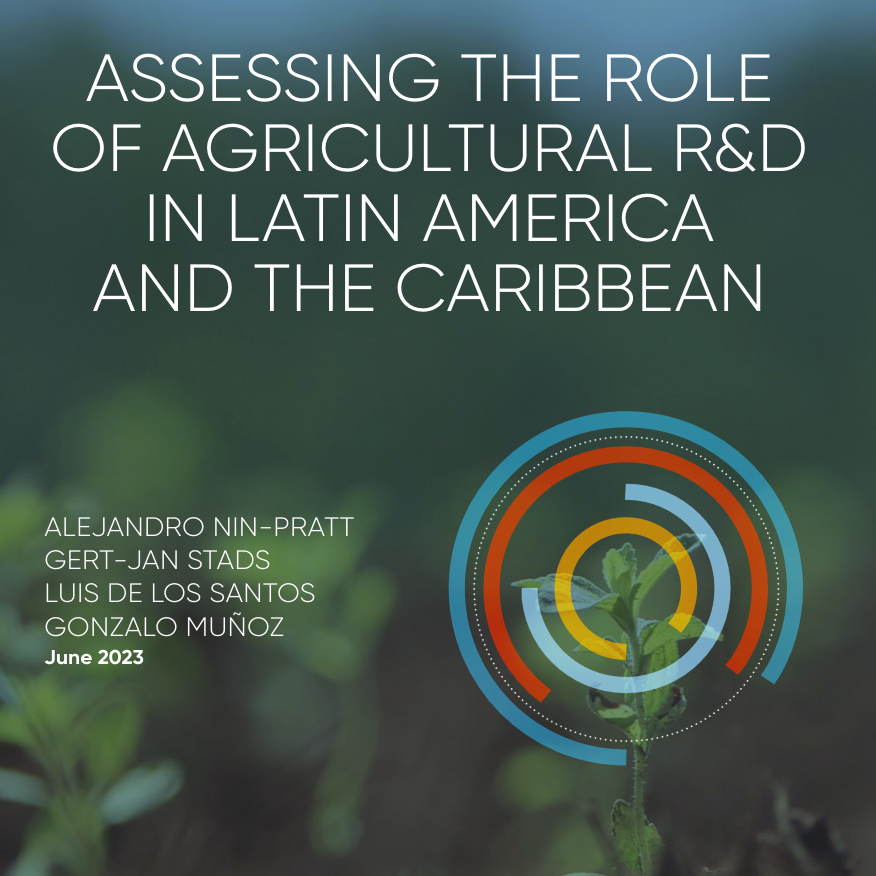
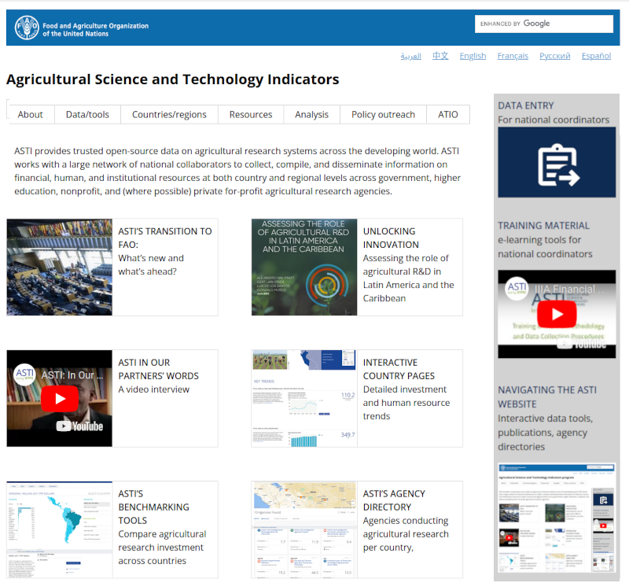

FAO.org
Agricultural Science and Technology Indicators
ASTI provides trusted open-source data on agricultural research systems across the developing world. ASTI works with a large network of national collaborators to collect, compile, and disseminate information on financial, human, and institutional resources at both country and regional levels across government, higher education, nonprofit, and (where possible) private for-profit agricultural research agencies.
ASTI’s transition to FAO:
What’s new and what’s ahead?
What’s new and what’s ahead?

Unlocking innovation
Assessing the role of agricultural R&D in Latin America and the Caribbean
Assessing the role of agricultural R&D in Latin America and the Caribbean
ASTI in our partners’ words
A video interview
A video interview
